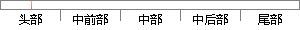

上文介绍了僵尸网络在建立和连接上如何使用了域名，攻击者利用这些僵尸网络可以很轻松的发起DDos攻击（Distributed denial-of-service，分布式拒绝服务攻击）。
片段位置图

相似结果|
1
原句片段：的发起DDos攻击（Distributed denial-of-service，分布式拒绝服务攻击）。
相似片段 1：拒绝服务攻击(英语:denial-of-service attack,缩写为 DoS),亦称洪水攻击,是一种...DDOS是Distributed Denial of Service的缩写,翻译成中文是“分布式拒绝服务“攻击,...
相似片段 2：...ntemet的发展,对Internet的攻击也日渐增多,一种经常被使用的攻击手段——分布式拒绝服务攻击(Distributed Denial of Service,DDoS),利用相当数量的傀儡机产生巨大...
相似片段 3：安全专家把DDoS(Distributed Denial of Service,分布式拒绝服务)攻击比作互联网“核武器”,因为一旦调动足够数量的“肉鸡”和存在各种协议漏洞的开放服务器...
相似片段 4：分布式拒绝服务攻击(DDoS, Distributed Denial of Service)由于其分布式的特性,具有强大的破坏力,而且防范困难。目前对DDoS攻击的防御策略有基于源端、受害端和中间...
相似片段 5：Denial of Service (DoS)-分布式拒绝服务攻击分布式拒绝服务攻击(英文:Distributed Denial of Service,缩写:DDoS)亦称洪水攻击。顾名思义,即是利用网络上已被攻陷的...
相似片段 6：DDOS 是英文Distributed Denial Service的缩写,意即"分布式拒绝服务",DDOS 的中文名叫分布式拒绝服务攻击,俗 称洪水攻击 DDoS 攻击概念 DoS 的攻击方式有很多种,最...
相似片段 7：实际破坏性有限的做法,取而代之的是,在一定时间内,彻底使被攻击的网络丧失正常服务功能,这种攻击手法为 DDoS,即分布式拒绝服务攻击(Distributed denial of service ...
相似片段 8：分布式拒绝服务(DDoS:Distributed Denial of Service)攻击指借助于客户/服务器技术,将多个计算机联合起来作为攻击平台,对一个或多个目标发动DDoS攻击,从而成倍地提高...
相似片段 9：DDoS:Distributed Denial of Service,即分布式拒绝服务攻击。 借助于客户/服务器技术,将多个计算机联合起来作为攻击平台,对一个或多个目标发动DDoS攻击,从而成倍地...
|
※ 片段修改建议 ※
近似词参考：- 介绍：先容
- 网络：收集
- 建立：成立 创立 创设 建树 确立 设立建设 竖立 创建 树立
- 连接：毗连 毗邻
- 如何：若何 怎样
- 使用：利用
- 利用：操纵 哄骗 使用 行使 应用
- 网络：收集
- 发起：倡议 创议 建议 提议 提倡
- 攻击：进犯 进击 打击 袭击
- 攻击：进犯 进击 打击 袭击
系统自动生成语句：上文先容了僵尸收集在成立和毗连上若何操纵了域名，进犯者操纵这些僵尸收集可以很轻松的倡议DDos进犯（Distributed denial-of-service，分布式拒绝服务进犯）。
注：本片段修改建议为系统自动生成，仅供参考。